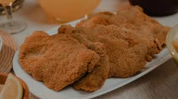
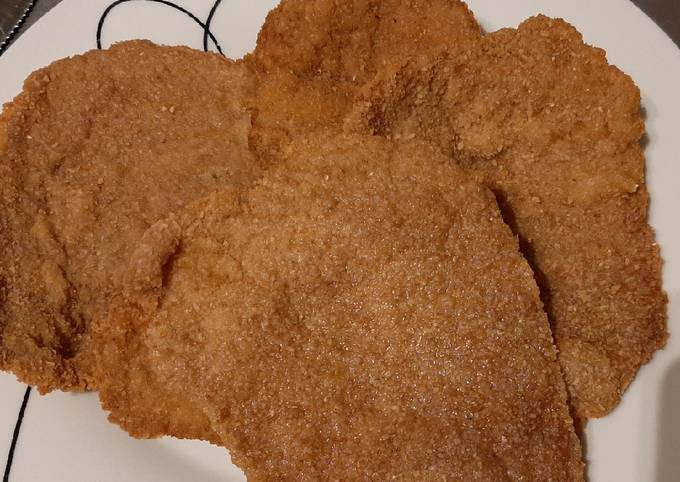

En esta pagina les enseñare como realizar una rica y deliciosa milanesas, los ingredientes y pasos son los siguientes:
Ingredientes
- 4 huevos
- dientes de ajo
- Perejil picado
- y pimienta, a gusto
- 1 kilo de nalga o peceto para milanesa
Preparación
Paso 1
Pelar los ajos y picar junto con el perejil.
Paso 2
Colocar los huevos en un bowl y batir hasta disolverlos bien. Luego agregar el perejil, los ajos y condimentar con sal y pimienta.
Paso 3
Colocar la carne en la mezcla anterior, deje unos minutos, retirar y pasar por pan rallado.
Paso 4
En una sartén con abundante aceite caliente freír las milanesas. Retirar y escurrir en papel absorbente.


Tutorial para hacer milanesas